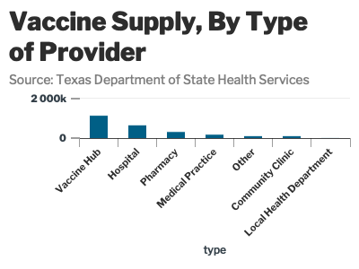

The goal of lbjdata is to …
Installation
You can install the released version of lbjdata from CRAN with:
install.packages("lbjdata")Example
This is a basic example which shows you how to solve a common problem:
library(lbjdata)
library(tidyverse)
#> ── Attaching packages ─────────────────────────────────────── tidyverse 1.3.0 ──
#> ✓ ggplot2 3.3.3 ✓ purrr 0.3.4
#> ✓ tibble 3.0.6 ✓ dplyr 1.0.4
#> ✓ tidyr 1.1.2 ✓ stringr 1.4.0
#> ✓ readr 1.4.0 ✓ forcats 0.5.0
#> ── Conflicts ────────────────────────────────────────── tidyverse_conflicts() ──
#> x dplyr::filter() masks stats::filter()
#> x dplyr::lag() masks stats::lag()
library(janitor)
#>
#> Attaching package: 'janitor'
#> The following objects are masked from 'package:stats':
#>
#> chisq.test, fisher.test
library(highcharter)
#> Registered S3 method overwritten by 'quantmod':
#> method from
#> as.zoo.data.frame zooWhat is special about using README.Rmd instead of just README.md? You can include R chunks like so:
provider_types <- read_csv("https://genesis.soc.texas.gov/files/accessibility/vaccineprovideraccessibilitydata.csv") %>%
clean_names() %>%
group_by(type) %>%
summarise(tot_shipped = sum(total_shipped),
tot_avail = sum(vaccines_available)) %>%
drop_na() %>%
arrange(desc(tot_shipped))
#>
#> ── Column specification ────────────────────────────────────────────────────────
#> cols(
#> NAME = col_character(),
#> TYPE = col_character(),
#> TSA = col_character(),
#> STREET = col_character(),
#> CITY = col_character(),
#> COUNTY = col_character(),
#> ADDRESS = col_character(),
#> ZIP = col_character(),
#> LAST_UPDATE_VAC = col_character(),
#> LAST_UPDATE_TIME_VAC = col_time(format = ""),
#> PFIZER_AVAILABLE = col_double(),
#> MODERNA_AVAILABLE = col_double(),
#> VACCINES_AVAILABLE = col_double(),
#> Total_Shipped = col_double(),
#> PublicPhone = col_character(),
#> WEBSITE = col_character()
#> )
provider_types %>%
hchart("column", hcaes(x=type, y = tot_shipped, colors=type)) %>%
hc_add_theme(hc_theme_lbj()) %>%
hc_title(text="Vaccine Supply, By Type of Provider") %>%
hc_subtitle(text="Source: Texas Department of State Health Services")
You’ll still need to render README.Rmd regularly, to keep README.md up-to-date. devtools::build_readme() is handy for this. You could also use GitHub Actions to re-render README.Rmd every time you push. An example workflow can be found here: https://github.com/r-lib/actions/tree/master/examples.
You can also embed plots, for example:

In that case, don’t forget to commit and push the resulting figure files, so they display on GitHub and CRAN.